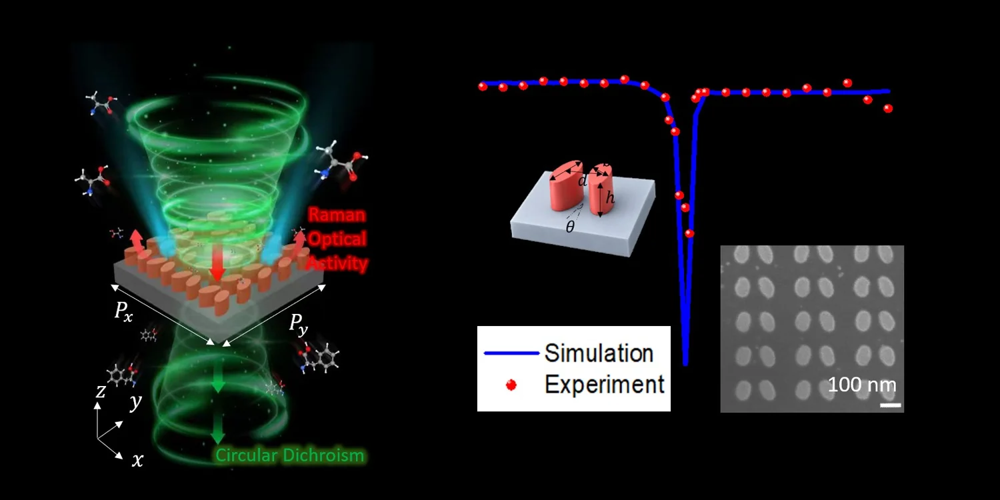
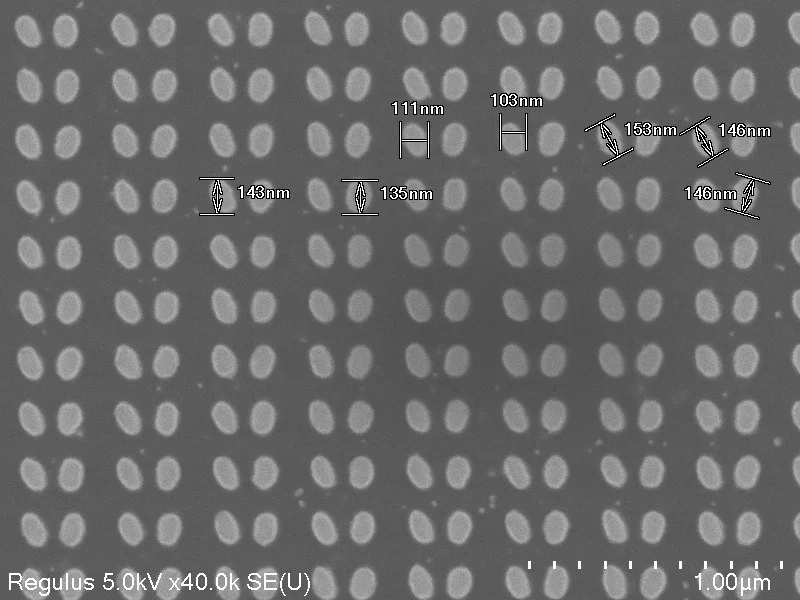
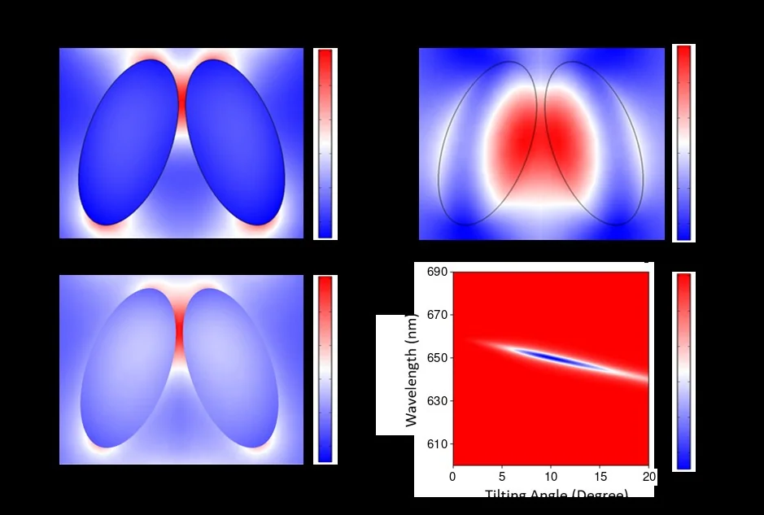

High-Q dielectric metasurfaces for chiral spectroscopy
KEY RESULT~150× experimental CD enhancement; ~100× ROA enhancement (reported)
This study develops a dielectric quasi-bound-state-in-the-continuum (quasi-BIC) metasurface for molecular sensing in the visible spectrum. Carefully engineered resonances enhance accessible chiral near fields while preserving a narrow optical linewidth.
The project combines circular dichroism (CD) with Raman optical activity (ROA) to access complementary information about chiral molecules. The results in the supplied manuscript report approximately 150-fold CD enhancement and 100-fold ROA enhancement.


